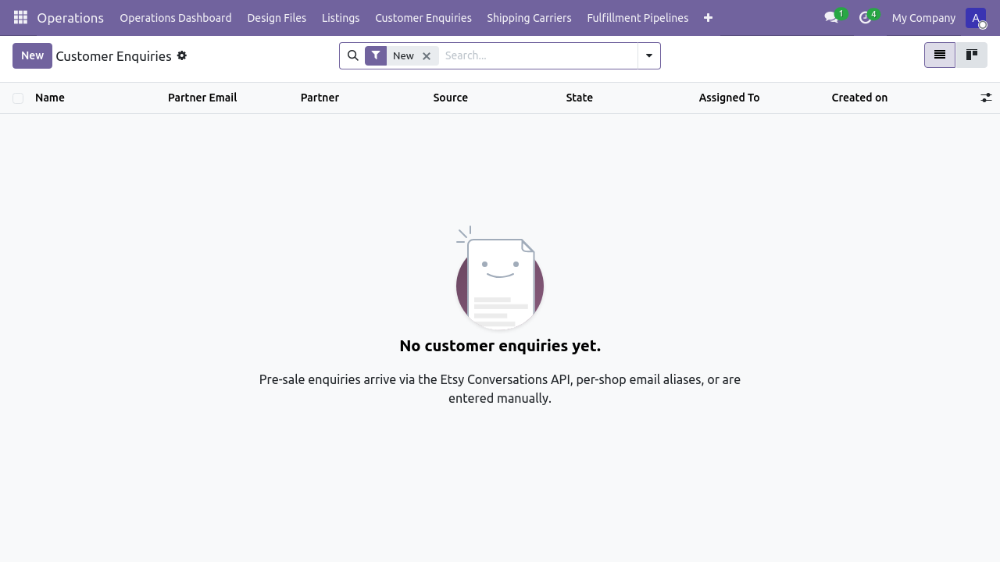
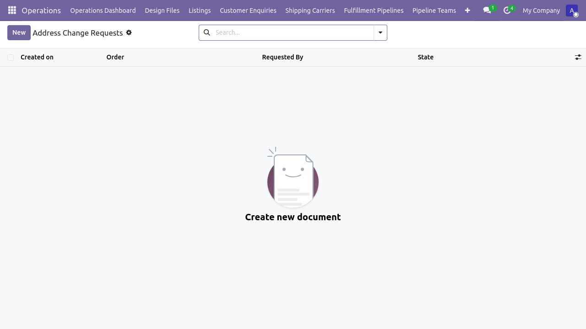
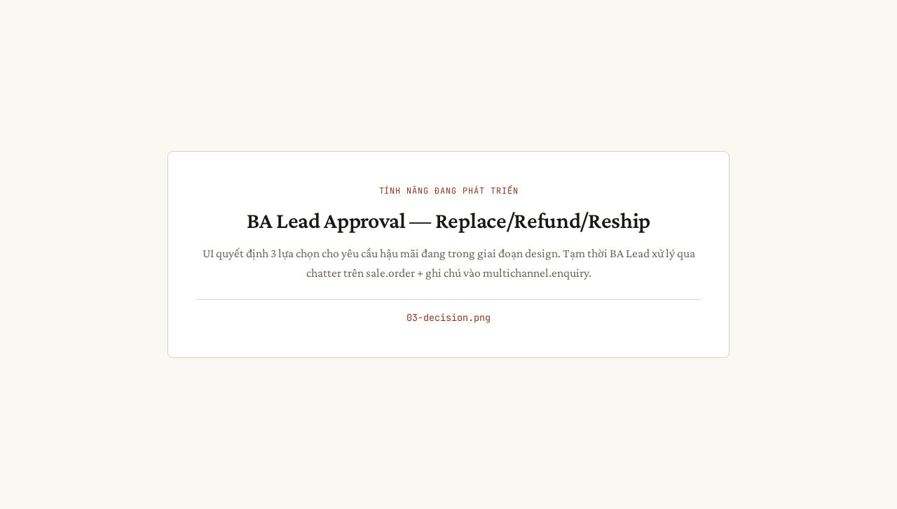

Flow 4 — Hậu mãi (đổi, trả, refund)
Phiên bản: 1.0 · Ngày: 2026-06-07 · Mã luồng: flow-4
Sơ đồ kiến trúc: flow-4-hau-mai.html
Hướng dẫn chi tiết: ../HUONG_DAN_HAU_MAI_VN.md
Tài liệu nghiệp vụ: ../FLOW_HAU_MAI_VN.md
Test tự động: tests/e2e/tests/uat_huong_dan_hau_mai.spec.ts (TBD)
TODO ảnh chụp: Các
![placeholder: ...]bên dưới sẽ được thay bằng ảnh thật khi luồng có spec UAT riêng (ngoài phạm vi P-UAT-SCREENSHOTS-WAVE-2-3). Slice kế tiếp đề xuất:P-UAT-FLOW-4-SCREENSHOTS.Luồng 4 — xử lý các yêu cầu sau bán: đổi hàng, trả hàng, refund, change-of-address.
Sơ đồ tóm tắt
Buyer Etsy Odoo Operator
│ │ │ │
│── Message ───▶│ │ │
│ "broken" │── Conversation ─────▶│ │
│ │ │── address.change ───▶│
│ │ │ .request │
│ │ │ │── Decide
│ │ │ │ (replace/refund)
│ │ │── Refund ────────────│
│ │◀── Refund ───────────│ │
│◀── Refund ────│ │ │
Giai đoạn 1 — Yêu cầu từ buyer
Trigger: Etsy buyer message hoặc Etsy form "Return/Refund"
Ingest: etsy.conversation.message (qua conversations_r scope — đang chờ approval)

Giai đoạn 2 — Address change request (riêng)
Vị trí: Form sale.order → header → "Address Change Request"
Model: etsy.address.change.request
POM: tests/e2e/page-objects/address_change_request_form.ts

Giai đoạn 3 — Quyết định (Replace / Refund / Reship)
Vai trò: BA Lead duyệt
Action: server action chuyển trạng thái pending → approved / rejected

Giai đoạn 4 — Thực thi refund
Nếu Refund:
1. Tạo account.move (Credit Note) link với sale.order
2. Gọi POST /v3/.../receipts/{id}/transactions/{id}/refunds lên Etsy
3. Trạng thái Etsy chuyển sang "Refunded"

Kiểm thử
cd tests/e2e
# Spec đang phát triển:
npm run test:hau-mai
Báo lỗi
| Triệu chứng | Hành động |
|---|---|
| Conversation không vào Odoo | conversations_r scope chưa được Etsy approve (xem P1-MSG-SCOPE slice) |
| Refund 400 "amount exceeds" | Kiểm tra refund_amount ≤ tổng transaction_amount |
| Address change không sync lên Etsy | Address mutation API chưa hỗ trợ — operator phải sửa thủ công trên Shop Manager |